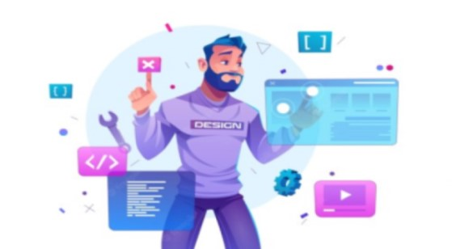

Biografia Profissional
Olá meu nome é Christian Ferreira Tenho 29 anos, e Trabalho a quase 11 anos no Ramo Gráfico, LinkedIn tudo começou quando comecei a trabalhar na empresa Zap Grafica, lá entrei como consultor de vendas e Depois me interessei pela a areia de Designer Gráfico e pelo processo de Produção da Empresa sabia que seria um desafio ,mais como gosto de me desafiar Pensei então “Bora Né”, Hoje trabalho no Setor De Montagem e conferencia de arquivos(Pré-impressão)Onde Efetuamos Fechamento de arte e a montagem dos arquivos, padronizando todo o processo do produto para uma Produção padronizada gerando valor na qualidade ,velocidade de entrega, e diminuindo prejuízo com mão de obra desnecessária e no desperdiço de materia , Desde pensar em a tonalidade da impressão até o processo de etiqueta e expedição do produto, Hoje estou me desafiando mais uma Vez, entrei na Universidade e estou no 3º Período no Curso de Analise e Desenvolvimento de Sistema, Sempre fui um cara curioso pelas tecnologia, mais achava que isso não era para mim, Nem eu Consigo acreditar Onde estou chegando mais sei que é só o começo desse Jornada, Hoje estou em Busca da Minha tão Sonhada Vaga de programador Junior, a famosa transição de carreira ,para poder praticar e Conseguir cada vez mais conhecimento para o meu crescimento e assim poder contribuir para o crescimento da minha futura companhia,que iriei colaborar , e pensando na evolução que a tecnologia está fazendo na Nossa Sociedade como toda,na areia da saúde,educação,no dia a dia como o modelo de trabalho home-office/Hibrido,no transito ,na qualidade de Vida em Geral,e quero fazer parte desse Movimento que vai Mudar a Historia Humanidade,fico no aguardo do seu contato E-mail agradeço pelo seu Tempo,até a nossa entrevista,